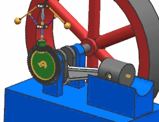
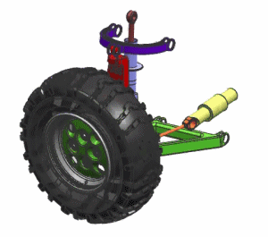
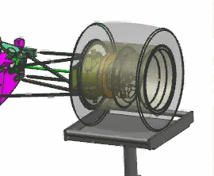

问题
1
2
3
假设您需要旋转这个机构中的飞轮，初速度为50 deg/sec，加速度为200 deg/sec^2.。那么哪种驱动最适合？(假设驱动是定义在飞轮运动副上。)

请选择一个答案。
这个机构使用滑动副来表示悬架的上下运动，使用滑动副来表示转向组件进出运动，要在这些滑动副上定义运动驱动，您认为应该使用哪种运动驱动？

请选择一个答案。
这个机构使用滑动副来表示轮盘的上下运动，您认为哪种运动驱动用来模拟颠簸路面的碰撞？

请选择一个答案。
错误！
正确！
恒定驱动让您定义初速度以及速度在仿真过程中的恒定变化。
可以使用两个简谐驱动，在转向运动副上，简谐驱动的幅值为90mm，频率为50 deg/sec；在悬架运动副上，简谐驱动的幅值为5mm，频率为360 deg/sec。
可以使用函数驱动来模拟颠簸路面的随机碰撞。使用的函数是一个 XY 表格函数，随机生成 X(时间)与 Y(位移)值